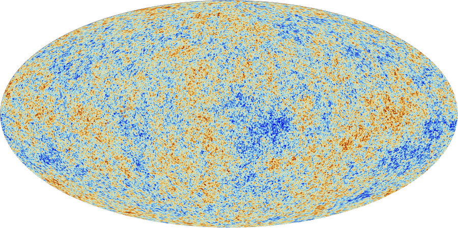
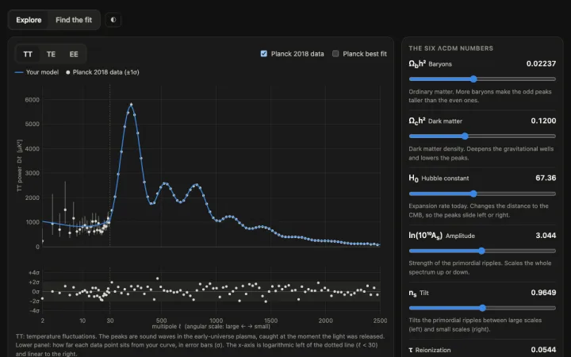

Interactive physics 互动物理 互動物理
Playground 游乐场 遊樂場
Physics you can touch: move the knobs of the universe and see what happens. 动手玩物理：转一转宇宙的旋钮，看看会发生什么。 動手玩物理：轉一轉宇宙的旋鈕，看看會發生什麼。
Interactive physics 互动物理 互動物理
Physics you can touch: move the knobs of the universe and see what happens. 动手玩物理：转一转宇宙的旋钮，看看会发生什么。 動手玩物理：轉一轉宇宙的旋鈕，看看會發生什麼。

The CMB sky seen by Planck. 普朗克卫星看到的宇宙微波背景。 普朗克衛星看到的宇宙微波背景。 Image: ESA and the Planck Collaboration, CC BY 4.0